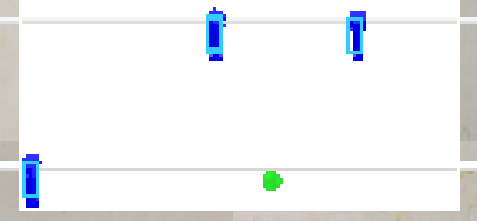

<!doctype html>
<html lang="en">
<head>
    <meta charset="utf-8">
<title>
2019 Spring 投影片
</title>
    <meta name="description" content="A framework for easily creating beautiful presentations using HTML">
    <meta name="author" content="Hakim El Hattab">
    
    <meta name="apple-mobile-web-app-capable" content="yes">
    <meta name="apple-mobile-web-app-status-bar-style" content="black-translucent">
    
    <meta name="viewport" content="width=device-width, initial-scale=1.0, maximum-scale=1.0, user-scalable=no">
    
    <link rel="stylesheet" href="css/reveal.css">
    <link rel="stylesheet" href="css/theme/black.css" id="theme">
    
    <!-- Theme used for syntax highlighting of code -->
    <link rel="stylesheet" href="lib/css/zenburn.css">

    <!-- Printing and PDF exports -->
    <script>
        var link = document.createElement( 'link' );
        link.rel = 'stylesheet';
        link.type = 'text/css';
        link.href = window.location.search.match( /print-pdf/gi ) ? 'css/print/pdf.css' : 'css/print/paper.css';
        document.getElementsByTagName( 'head' )[0].appendChild( link );
    </script>

    <!--[if lt IE 9]>
    <script src="lib/js/html5shiv.js"></script>
    <![endif]-->
</head>

<body>
<div class="reveal">
<!-- Any section element inside of this container is displayed as a slide -->
<div class="slides">
<section data-markdown>
    <script type="text/template">
## 2019 Spring 投影片

### 虎科大機械設計工程系

#### 協同產品設計實習期末投影片
<small>
Created by [40623128](https://github.com/40623128)
</small>

[小組網站](https://mdekmol.github.io/cd2019a-task1-2019cda_t1_g3_1/content/index.html)


    </script>
</section>


						
<section>
<section data-markdown>
    <script type="text/template">
<!-- 請注意, @others 不可以內縮 -->
## 手足球製作內容
### 影像辨識(只能辨識各顏色單個物件)
[影像辨識尋找桿子與球](https://mdecadp2018.github.io/site-40623128/content/%E5%BD%B1%E5%83%8F%E8%BE%A8%E8%AD%98%E5%B0%8B%E6%89%BE%E7%90%83%E5%92%8C%E6%A1%BF%E5%AD%90%E4%BD%8D%E7%BD%AE.html)

<iframe width="560" height="315" src="https://www.youtube.com/embed/C947PvvFDiw" frameborder="0" allow="accelerometer; autoplay; encrypted-media; gyroscope; picture-in-picture" allowfullscreen></iframe>


    </script>
</section>


						
<section data-markdown>
    <script type="text/template">
<!-- 請注意, @others 不可以內縮 -->
[影像辨識機器對打](https://mdecadp2018.github.io/site-40623128/content/%E5%BD%B1%E5%83%8F%E8%BE%A8%E8%AD%98%E6%A9%9F%E5%99%A8%E5%B0%8D%E6%89%93.html)

<iframe width="560" height="315" src="https://www.youtube.com/embed/Nv5ppem_j_8" frameborder="0" allow="accelerometer; autoplay; encrypted-media; gyroscope; picture-in-picture" allowfullscreen>
    </script>
</section>


						
<section data-markdown>
    <script type="text/template">
<!-- 請注意, @others 不可以內縮 -->
[影像辨識機器對打修正版](https://mdecadp2018.github.io/site-40623128/content/%E5%BD%B1%E5%83%8F%E8%BE%A8%E8%AD%98%E6%A9%9F%E5%99%A8%E5%B0%8D%E6%89%93%E4%BF%AE%E6%AD%A3%E7%89%88.html)

修正球桿擊出但無擊中球，使球跑到桿子後面時，無法回擊的問題。

<iframe width="560" height="315" src="https://www.youtube.com/embed/vXuvJptDWkA" frameborder="0" allow="accelerometer; autoplay; encrypted-media; gyroscope; picture-in-picture" allowfullscreen></iframe>


    </script>
</section>


						
<section data-markdown>
    <script type="text/template">
<!-- 請注意, @others 不可以內縮 -->
程式架構


    </script>
</section>


						
</section>

<section>
<section data-markdown>
    <script type="text/template">
<!-- 請注意, @others 不可以內縮 -->
### 影像辨識第二版(可辨識出多個物件)
[影像辨識尋找桿子與球](https://mdecadp2018.github.io/site-40623128/content/%E6%9B%B4%E6%94%B9%E5%BD%B1%E5%83%8F%E8%BE%A8%E8%AD%98%E6%96%B9%E5%BC%8F.html)



    </script>
</section>


						
</section>

<section data-markdown>
    <script type="text/template">
# 投影片快捷鍵

* 利用箭頭上下前後換頁
* 按 f 鍵進入全螢幕模式 (full screen)
* 按 s 鍵可以顯示投影片筆記 (show)
* 按 o 鍵可以切換單張或全域檢視 (overview)
* 按 b 或 . 鍵可以切換螢幕黑屏 (black)
* 按 Esc 可以退出全螢幕或全域檢視 (Escape)

    </script>
</section>


						
<section>
<section data-markdown>
    <script type="text/template">
<!-- 請注意, @others 不可以內縮 -->
# 數學符號與方程式

Inline math equations go in like so: $\omega = d\phi / dt$. Display
math should get its own line and be put in in double-dollarsigns:

$$I = \int \rho R^{2} dV$$
    </script>
</section>


						
<section data-markdown>
    <script type="text/template">
<!-- 請注意, @others 不可以內縮 -->
## 利用 Markdown 寫投影片
以下利用 Markdown 格式展示 Python 程式碼:
```
# use threading and subprocess to threading the make process
import os
import subprocess
import threading

def domake():
    
    path = "../exposed/api/exposed"
    ubuntu = "../Ubuntu"
    
    # create obj path
    
    if not os.path.exists(path+"/../obj"):
        os.makedirs(path+"/../obj")
    
    subprocess.call(["make", "clean"], cwd=path)
    subprocess.call("make", cwd=path)
    subprocess.call(["cp", "{libslvs.so, _slvs.so, slvs.py}", ubuntu], cwd=path)
    subprocess.call(["python3", "circle_ex.py"], cwd=path+"/"+ubuntu)
    
make = threading.Thread(target=domake)
make.start()
```
    </script>
</section>


						
<section data-markdown>
    <script type="text/template">
## 使用 iframe 導入影片

### 導入影片 template

<iframe src="https://player.vimeo.com/video/183950627" width="640" height="492" frameborder="0" webkitallowfullscreen mozallowfullscreen allowfullscreen></iframe>
    </script>
</section>


						
</section>

</div>

</div>

<script src="lib/js/head.min.js"></script>
<script src="js/reveal.js"></script>
<script>
        // More info https://github.com/hakimel/reveal.js#configuration
        Reveal.initialize({
            controls: true,
            progress: true,
            history: true,
            center: true,

            transition: 'slide', // none/fade/slide/convex/concave/zoom

            // More info https://github.com/hakimel/reveal.js#dependencies
            dependencies: [
                { src: 'lib/js/classList.js', condition: function() { return !document.body.classList; } },
                { src: 'plugin/markdown/marked.js', condition: function() { return !!document.querySelector( '[data-markdown]' ); } },
                { src: 'plugin/markdown/markdown.js', condition: function() { return !!document.querySelector( '[data-markdown]' ); } },
                { src: 'plugin/highlight/highlight.js', async: true, callback: function() { hljs.initHighlightingOnLoad(); } },
                { src: 'plugin/zoom-js/zoom.js', async: true },
                { src: 'plugin/notes/notes.js', async: true },
                { src: 'plugin/math/math.js', async: true }
            ]
        });
</script>
</body>

</html>

